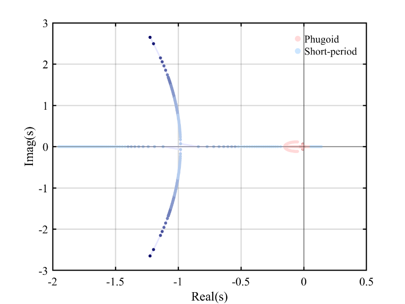

How moving the centre of gravity changes the F-16 modes
I wrote code to sweep the centre of gravity from 25% to 35% of mean aerodynamic chord at 220 m/s and 15,000 ft, trimming and linearising the aircraft at each position.
Tracking the longitudinal eigenvalues, damping and natural frequency showed the modes approaching the real axis and the aircraft becoming unstable as the centre of gravity moved aft. Where converging frequencies made automatic classification ambiguous, I checked the tracking manually.